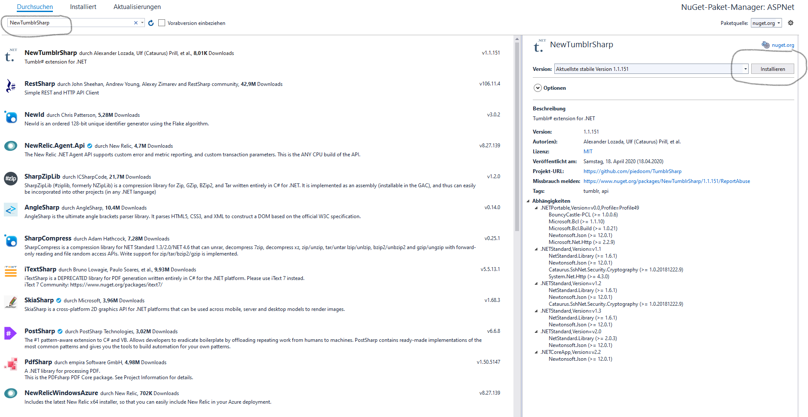

First step
Nuget
TumblrSharp is currently on Nuget as NewTumblrSharp. If you want TumblrSharp just for your own use, and don't wish to develop it further, simply use Nuget.
Package-Managment-Console
Install-Package NewTumblrSharp
Nuget-Manager
Open the nuget-manager by right clicking on your project. In the searchbox type NewTumblrSharp and install.

Source code
If you'd like to use TumblrSharp via its source code to continue development, there are two methods.
The following is for Visual Studio users, but the same steps can be used for Xamarin studio, etc. with little modification.
Method 1: Adding Projects as References
This method is preferred, as you can easily change the TumblrSharp source if needed without switching projects / reloading .dll files.
- Clone or download the repository
- Open the project in which you wish to use TumblrSharp
- Add project files to your solution.
for portable:
- src/portable/TumblrSharp/TumblrSharp.csproj
- src/portable/TumblrSharp.Client/Tumblrsharp.Client.csproj
for other:
- src/TumblrSharp/TumblrSharp.csproj
- src/TumblrSharp.Client/Tumblrsharp.Client.csproj
- Add references to all 2 newly added projects in your main project
Method 2: Compiling and adding DLLs
- Clone or download the repository
- Build all included projects
- Add references to the
.dllfiles in your project, the files found in the directorybin.